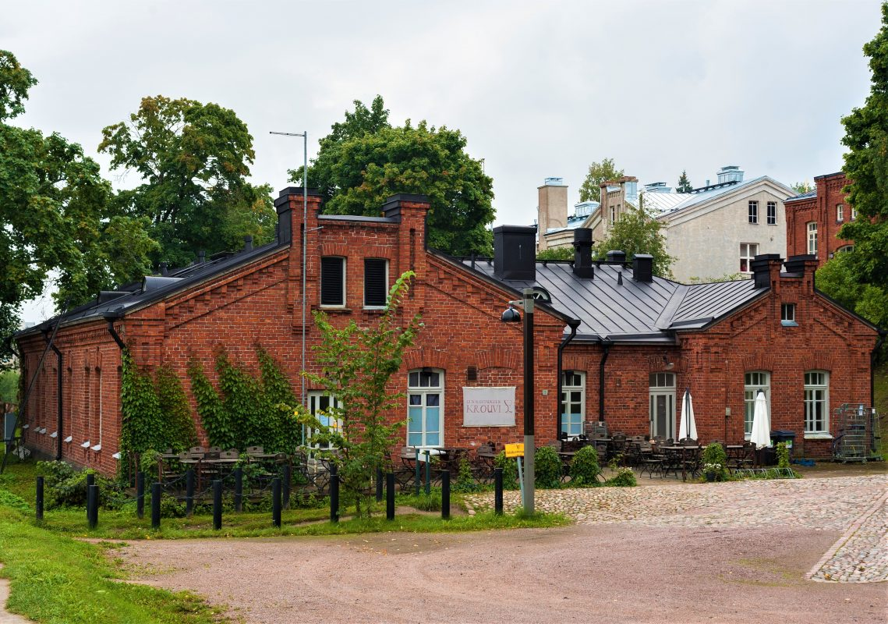
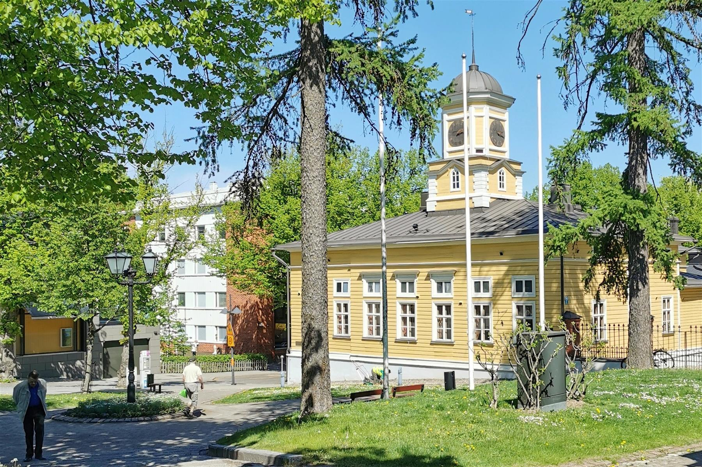

Nähtävyydet
Linnoitus

Lappeenrannan linnoitus on alueena erinomainen nähtävyys ja käyntikohde. Osa rakennuksista juontaa aina 1700-luvulle saakka, joiden historiallisissa tiloissa ovat toimineet niin suomalaiset, venäläiset, että ruotsalaisetkin vaikuttajat vuosikausien saatossa.
Linnoituksesta löytyy monet parhaimmat Lappeenrannan nähtävyydet, sillä voit tutustua muun muassa:
Etelä-Karjalan taidemuseoon Ratsuväkimuseoon Lappeenrannan ortodoksiseen kirkkoon Komendatin taloon Luonto- ja taidekeskus Saimaariumiin Lisäksi Lappeenrannan linnoituksen tiloissa järjestetään erilaisia tapahtumia.Kun siis kaipaat tekemistä Lappeenrannassa, kannattaa suunnaksi ottaa juurikin linnoitus ja sen lähiympäristö.
Raatihuone

Raatihuone on yksi kauneimpia nähtävyyksiä Lappeenrannassa.
Vuonna 1829 valmistunut rakennus on Suomen vanhin säilynyt Raatihuone.
Rakennus vaurioitui sotavuosina, jonka jälkeen sitä on entisöity. Sisätilat on sisustettu osittain alkuperäisten huonekalujen avulla. Tila on nykyisin lähinnä avoinna juhla- ja edustustilaisuuksien osalta. Kesäkuukausina sisätiloihin on mahdollista tutustua opastetuilla kierroksilla, joista saat lisätietoja Lappeenrannan Matkailuneuvonnasta.